BN21 Portable Charger · EVSE Pro App User Manual
Contents
At a glanceBefore you startAdding your BN21 (about 1 minute)ChargingScheduled chargingHow charging starts: Plug & Charge and the buttonDevice settingsHistory and costsUnpairing, handing over and changing phonesMessages and alertsFAQSpecificationsAt a glance
The BN21 is a Bluetooth-only portable charger: control it with your phone when you're nearby — no home Wi-Fi and no account needed.
| What you can do | Notes |
|---|---|
| ✅ Pair over Bluetooth, start / stop charging | When you're near the charger (within Bluetooth range, usually ~10 m) |
| ✅ Adjust the charging current | 6 – 8 A |
| ✅ Scheduled charging (one-time / weekly) | Runs on time even after your phone leaves |
| ✅ Plug & Charge switch, start / stop with the charger's button | §5 |
| ✅ Screen brightness, dimming, temperature unit | Applies to the charger's own screen |
| ✅ Charging history, cost estimates, export | Stored on your phone |
| ✅ Unpair / hand over | §8 |
| What the BN21 doesn't have | Why |
|---|---|
| ❌ Remote control (when you're away from the charger) | It doesn't connect to the internet — Bluetooth is the only channel |
| ❌ Wi-Fi setup | Same reason; pairing skips this step |
| ❌ Notifications while you're away | Same reason |
| ❌ Sharing the device with family | Not supported in the current version |
| ❌ Firmware updates from the app | Not supported on this model |
| ❌ NFC cards, load balancing, solar | Not in the hardware |
In short: every action needs you near the charger with Bluetooth on. If the app shows "Device offline", move closer and check that Bluetooth is on.
Before you start
- Install EVSE Pro from the App Store.
- On first launch the app asks for Bluetooth access — tap "Allow". It's the BN21's only way to talk to your phone. If you declined, turn it on in iPhone Settings → Privacy & Security → Bluetooth.
- Notifications are optional: the BN21 isn't online, so it doesn't use push notifications. Declining doesn't affect anything.
- You don't need an account. Pairing, control, schedules and history all work signed out. Only Feedback requires signing in.
Adding your BN21 (about 1 minute)
Plug the BN21 into a power outlet and wait for its screen to light up. Then tap "Add a device" on the app's home screen (or "+" in the top-right):
- Choose a method — "Pair via Bluetooth", or "Scan QR code": scan the QR code on the charger's label or screen; pairing then continues over Bluetooth. If it won't scan, tap "Search for nearby devices" to pair over Bluetooth directly.
- "Looking for devices" — hold your phone near the charger. A device named like EVSE-XXXXXX appears; tap it. When iPhone shows a Bluetooth pairing request, tap "Pair".
- "Almost done" — name the device. The default is its Bluetooth name; change it to something like "Car charger" so it's easy to recognise.
- "You're all set" — tap "Open <device name>" to go to the control screen.
There is no Wi-Fi step for the BN21 — once paired, it's ready.
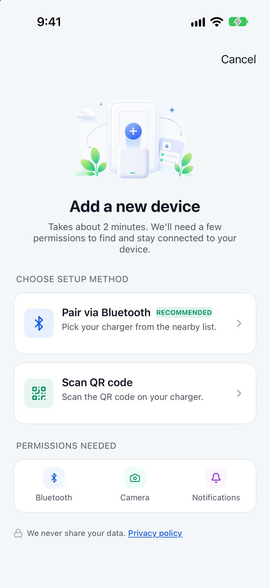
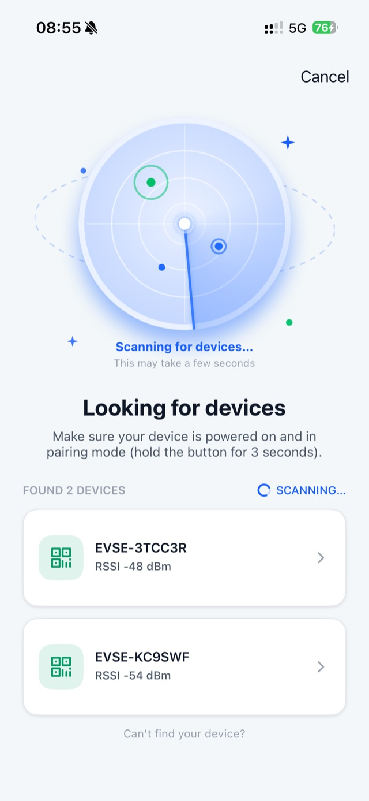
Can't pair? Check in this order:
- Is the charger's screen on? Is your phone close enough?
- "This charger is already paired": the BN21 is still paired to someone else's phone (or your old one). Ask the previous owner to unpair it, or factory-reset the charger (§8.3).
- Just factory-reset? After a factory reset you must power-cycle the charger once more before pairing, otherwise it keeps connecting and dropping. Unplug it, wait 10 seconds, plug it back in, wait for the screen to settle, then pair again.
- Paired it on this iPhone before? Go to iPhone Settings → Bluetooth, tap ⓘ next to EVSE-XXXXXX → Forget This Device, then pair again in the app (§8.4).
Charging
Tap the BN21 card on the home screen to open the device page. It opens on the "Status" tab.
3.1 Your first charge
- Plug the cable into your car. The screen changes from "No cable connected" to "Ready".
- If needed, drag the "Current limit" slider (6 – 8 A).
- Tap "Start charging". Tap or swipe "Stop charging" at any time.
With "Plug & Charge" turned on (§5), charging starts as soon as you plug in — no tap needed.
3.2 States you'll see
| State | When | What you can do |
|---|---|---|
| "No cable connected" | Cable not plugged in | Plug in |
| "Ready" | Plugged in, car recognised | Adjust current, "Start charging" |
| Charging | Charging in progress | Adjust current, "Stop charging" |
| "Waiting" / "Scheduled" | A schedule is set and it's not time yet | "Stop charging" to cancel this wait, or "Start now" to charge immediately |
| "Vehicle paused" | The car stopped drawing power (usually reached its own target charge level) | "End charging" to close the session |
| "Charging paused by the charger" | The charger's protection kicked in | Fix the cause, then "Resume" |
| "Complete" | This charge has finished | See the summary, "Charge again" |
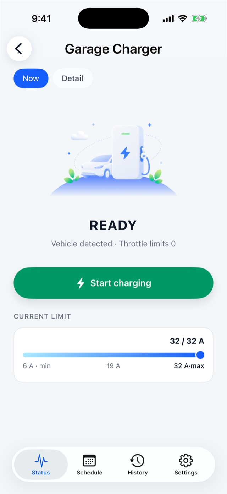
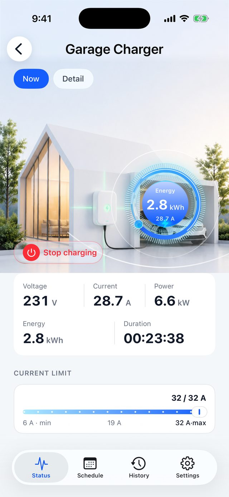
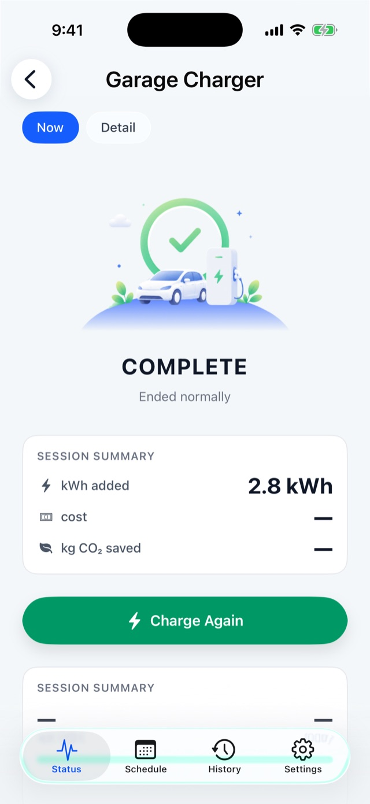
3.3 While charging
- The gauge in the middle shows current power out of 1.84 kW;
- Voltage, current and power are live readings; energy and duration add up for this session. Missing data shows "—", never a made-up 0;
- Duration counts only actual charging time — pauses aren't counted.
3.4 Current limit
The BN21 is rated 8 A, so the slider runs 6 – 8 A. Release the slider or tap a point on it to send the new limit. If the charger rejects it, the slider snaps back and tells you why. Turn it down if the outlet's wiring is old and you're worried about heat.
3.5 When your phone leaves
- Charging carries on: the charger runs the session itself. Walk away or close the app and it keeps charging until the car is full or you stop it.
- Seeing "Device offline" after you walk away is normal — the BN21 only has Bluetooth. Come back and open the device page to reconnect.
- To stop charging while you're away: you can't. Unplug the cable, or stop it from the app or the charger's button when you're back.
Scheduled charging
Device page → "Schedule" tab. Handy for off-peak charging.
| Mode | Settings | Behaviour |
|---|---|---|
| "One-time" | A future date + time | Starts once at that time |
| "Recurring" | Pick weekdays + one start time | Starts at that time on each chosen day |
Only one mode can be on — turning one on turns the other off.
How: set the time first → then turn on "Enable schedule" / "Recurring schedule" (this is when it's sent to the charger) → "Schedule set" means it worked. While the switch is on the time is locked; turn it off to change it.
Three things to know on the BN21:
- Turn off "Plug & Charge" (§5) first — otherwise charging starts the moment you plug in and the schedule never applies.
- The charger runs the schedule itself. Once set, your phone can leave and the app can be closed.
- Connect with the app once after a power cut. When the portable charger is unplugged from the wall, its internal clock is lost. Next time you plug it in, open the app and connect (just open the device page — the app sets the time automatically). Until then, the schedule may run at the wrong time.
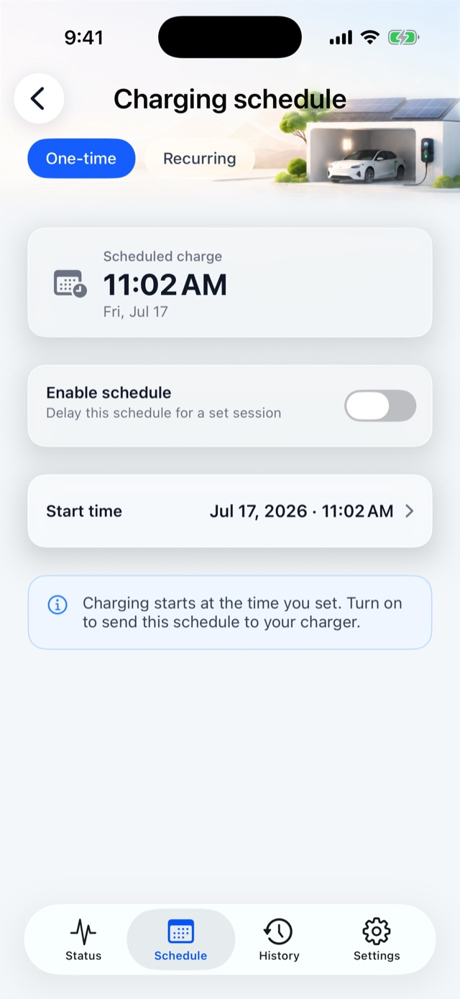
How charging starts: Plug & Charge and the button
Device page → "Settings" → "Authentication" → "Plug & Charge" switch (you need to be near the charger).
| Plug & Charge | How charging starts |
|---|---|
| On | Plug in and it starts — nothing to tap |
| Off | Tap "Start charging" in the app, or press the button on the charger |
- The charger's button works in both modes, to start or stop charging — so you can stop a charge at the charger even without your phone.
- There's no "How to start charging" option in the BN21's settings. That's expected: its start methods are just the two above, nothing else to choose.
- If you use schedules (§4), remember to turn Plug & Charge off.
Device settings
Device page → "Settings" tab. The BN21's settings page is shorter than on internet-connected models — no connection, sharing or firmware update rows. That's normal.
| Section | Setting | Notes |
|---|---|---|
| Device card at the top | Tap to rename | Changes the name shown in the app only |
| "Safety" | "Max current" | Read-only, 8 A |
| "Display" | "LCD brightness" + "Auto-adjust" | The charger's own screen; previews as you drag, applies on release |
| "Display" | "Dimmed brightness" / "Dim after" | How dim the idle screen gets, and after how long |
| "Display" | "Screen temperature unit" ℃ / ℉ | Temperature unit on the charger's screen |
| "Authentication" | "Plug & Charge" | See §5 |
| "Firmware & info" | "About this charger" | Model, serial number (double-tap to copy), max power / current, phases, firmware version, lifetime energy |
| "Firmware & info" | "Fault codes" | What each fault code on the charger's screen means and what to do |
| Bottom | "Unpair this device" | See §8 |
Screen and Plug & Charge settings need you near the charger with Bluetooth connected. If it can't connect, the app asks you to move closer and try again.
History and costs
7.1 Charging history
Device page → "History" tab:
- Recent energy / range / CO₂ saved, plus today and this month;
- Weekly / monthly / yearly bar chart;
- "View all" lists sessions by month, with date filters;
- Each session shows energy, cost, start method ("Via app" / "Device button" / "Plug & Charge" / "Scheduled") and stop reason; "Download receipt (PDF)" is available;
- "Export full history (CSV)" opens in Excel or any spreadsheet app.
Where BN21 history comes from: the charger records every session itself and syncs it to the app when your phone connects. So:
- It doesn't matter if your phone wasn't around while charging — the session is filled in next time you open the device page;
- Plugging in for under 10 seconds without delivering any energy doesn't create a record;
- A field (such as start method) occasionally shows "—": that piece of data wasn't available for that session; it's not an error.
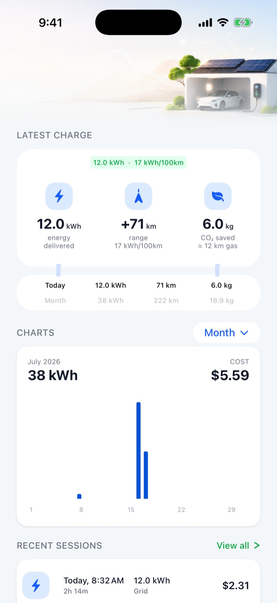
7.2 Electricity price and vehicle efficiency
Me → Electricity rate / Vehicle efficiency (global settings — no sign-in, no internet, shared by all your devices):
- Electricity price: set time-of-use prices (peak / off-peak) for weekdays, Saturdays and Sundays. Time windows can run past midnight. Once set, history and the "Complete" screen show a cost estimate for each charge. In Australia, the UK, Spain, Italy, Portugal and France you can tap "Import from your electricity company" to pull in your plan (this step needs your phone online).
- Vehicle efficiency: set kWh per 100 km (default 17) to convert energy into driving range. Range and CO₂ figures are estimates.
Unpairing, handing over and changing phones
8.1 Unpair (near the charger)
Device page → "Settings" → "Unpair this device" at the bottom → go through the checklist → "Unpair". It takes about 10 seconds; stay near the charger and keep Bluetooth on.
Unpairing clears the pairing on the charger and removes this BN21's history, schedules and display settings from this phone. Afterwards anyone can pair it straight away.
8.2 When you're not near the charger
The BN21 can only be unpaired over Bluetooth. Away from it, you can only remove it from this phone: the device disappears from the app, but the pairing on the charger remains, so whoever pairs it next has to factory-reset it first (§8.3). Before handing the charger over, unpair it next to the charger if you can.
8.3 Factory-reset the charger
- Unplug the charging cable from the car;
- Unplug the charger from the wall, then plug it back in;
- Within 30 seconds of powering on, press and hold the charger's button for about 10 seconds;
- Unplug it from the wall and plug it back in once more (don't skip this — otherwise a new phone can't pair);
- Wait for the screen to settle, then pair again.
8.4 Before pairing again on an iPhone: forget the old Bluetooth pairing
After unpairing or a factory reset, if you're pairing again on the same iPhone: go to iPhone Settings → Bluetooth, tap ⓘ next to EVSE-XXXXXX → Forget This Device, then pair in the app. The system's old pairing isn't removed by unpairing, and leaving it causes repeated connection failures.
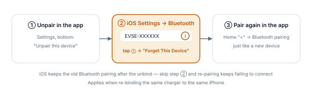
8.5 Changing phones
The BN21 isn't online, so a new phone can't take over the old phone's pairing directly.
- Old phone still works: unpair with it next to the charger (§8.1), then pair with the new phone;
- Old phone lost or broken: factory-reset the charger (§8.3), then pair with the new phone.
History on the old phone doesn't move to the new one. To keep it, use "Export full history (CSV)" before switching.
Messages and alerts
Tap the bell in the top-right of the home screen to open Messages. While your phone is connected to the BN21, charging start / finish and alerts (such as over-temperature, over-current, ground fault, abnormal voltage) are recorded here — no sign-in needed.
The BN21 isn't online, so you get no alerts while your phone is away; you'll see the latest status when you're back and connected. For what each alert means, see "Alerts" in the Help center; for codes on the charger's screen, see Settings → Fault codes.
FAQ
| Question | Cause and fix |
|---|---|
| The app says "Device offline" | The BN21 only has Bluetooth: move closer, make sure Bluetooth is on and the charger is powered. If Bluetooth access was denied, allow it in system Settings |
| Can I stop charging when I'm not home? | No. The BN21 isn't online — come back and use the app or the charger's button, or unplug the cable |
| The schedule didn't start on time | ① Is Plug & Charge off? ② After a power cut, did you connect with the app once (§4, point 3)? ③ Does the car have its own schedule, or is it already full? |
| Charging starts as soon as I plug in; the schedule does nothing | Plug & Charge is on — turn it off in Settings |
| No Wi-Fi / sharing / firmware update in Settings | The BN21 doesn't support these — that's normal |
| The charger's button does nothing | Make sure the cable is plugged in and the charger has no fault. If it still doesn't work, flip the Plug & Charge switch once in Settings (on or off, while near the charger) and try again |
| Can't pair after a factory reset | Power-cycle once more after the reset (§8.3 step 4); on the same iPhone, also forget the old Bluetooth pairing (§8.4) |
| "We couldn't confirm whether the command went through" | It doesn't mean it failed — the confirmation timed out. The screen updates on its own shortly; don't keep tapping |
| "Charger no longer paired" | The charger was factory-reset or unpaired by someone else. Tap "Remove device" in the dialog, then pair again |
| A charge is missing from history | Open the device page so your phone connects — it'll be filled in. Plug-ins under 10 seconds aren't recorded |
More help: Me → Help center, or sign in and use Me → Feedback to open a ticket (leave "Diagnostics" on to help us find the problem).
Specifications
| Item | BN21 |
|---|---|
| Model code | bn21-02-eu |
| Supply | Single-phase 230 V |
| Rated current / power | 8 A / 1.84 kW (adjustable 6 – 8 A in the app) |
| Connector | Type 2 cable |
| Screen | Yes (display-only) |
| Connectivity | Bluetooth (no Wi-Fi / cloud) |
| Start methods | App, charger button, Plug & Charge |
| NFC cards / load balancing / solar / firmware update from app | Not supported |
Written against the EVSE Pro English UI; features follow the released version. Screenshots are taken from other models, so some details may differ on the BN21.
BN21 便携充电器 · EVSE Pro App 使用手册
先看这一页
BN21 是纯蓝牙的便携充电器：手机靠近它就能控制，不需要家庭 Wi-Fi，也不需要注册账号。
| 你能做的 | 说明 |
|---|---|
| ✅ 蓝牙配对、开始 / 停止充电 | 人在充电器旁（蓝牙范围内，一般 10 米以内） |
| ✅ 调整充电电流 | 6 – 8 A |
| ✅ 预约充电（一次性 / 每周循环） | 设好后手机离开也照常执行 |
| ✅ 即插即充开关、桩上按键启停 | §5 |
| ✅ 屏幕亮度、降暗、温度单位 | 调的是充电器自带的屏幕 |
| ✅ 充电记录、费用估算、导出 | 数据存在手机上 |
| ✅ 解绑 / 转让 | §8 |
| BN21 没有的 | 原因 |
|---|---|
| ❌ 远程控制（不在充电器旁时操作） | 不联网，只有蓝牙一条通道 |
| ❌ Wi-Fi 配网 | 同上，配对流程里不会出现这一步 |
| ❌ 不在旁边时的推送通知 | 同上 |
| ❌ 设备分享给家人 | 当前版本不支持 |
| ❌ 固件在线升级 | 该型号不支持 App 升级固件 |
| ❌ NFC 刷卡、负载均衡、太阳能 | 硬件不带 |
一句话：所有操作都要人在充电器旁、手机蓝牙打开。 App 显示「离线」时，先走近一点、确认蓝牙已开。
准备
- 在 App Store 安装 EVSE Pro。
- 首次打开会请求蓝牙权限，请选「允许」——这是 BN21 唯一的通信方式。拒绝过的话，到 iPhone「设置 → 隐私与安全性 → 蓝牙」里打开 EVSE Pro。
- 通知权限可选：BN21 不联网，用不到推送通知，拒绝也不影响使用。
- 账号可以不注册。 BN21 的配对、控制、预约、记录都不需要登录；只有「意见反馈」需要登录。
添加 BN21（约 1 分钟）
把 BN21 插上电源插座，等屏幕亮起，然后在 App 首页点「添加设备」（或右上角「+」）：
- 选择方式——选「通过蓝牙配对」，或「扫描二维码」：扫描充电器贴纸或屏幕上的二维码，扫码后同样走蓝牙。扫不出时点「直接搜索附近设备」改走蓝牙配对。
- 正在查找设备——手机靠近充电器，列表里出现形如 EVSE-XXXXXX 的设备，点它。iPhone 弹出系统蓝牙配对请求时点「配对」。
- 就快完成了——给设备起名，默认是蓝牙广播名，可改成「车里那台」「车库」等，方便以后辨认。
- 全部就绪——点「打开 <设备名>」进入控制页。
BN21 没有 Wi-Fi 步骤，配对完就能用。
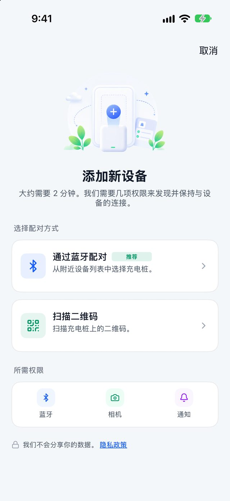
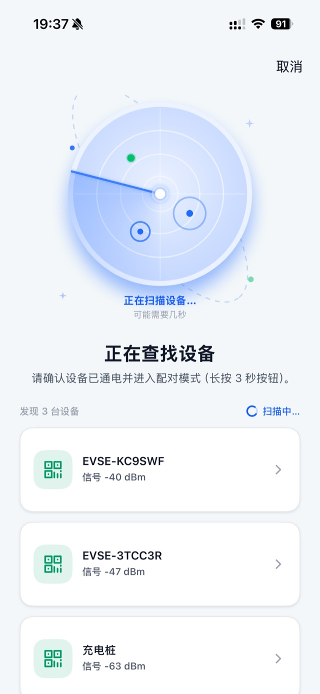
配不上？按顺序排查：
充电
从首页点 BN21 的卡片进入设备页，默认就是「状态」标签。
3.1 第一次充电
- 把充电枪插进车辆，界面从「未连接充电枪」变成「就绪」。
- 需要的话拖动「电流上限」滑杆（6 – 8 A）。
- 点「开始充电」。充电中随时点按或右滑「停止充电」。
打开了「即插即充」（§5）的话，插枪就会自动开始，不用点按钮。
3.2 界面上会看到的状态
| 状态 | 什么时候出现 | 你能做的 |
|---|---|---|
| 「未连接充电枪」 | 枪没插 | 插枪 |
| 「就绪」 | 枪已插、车已识别 | 调电流、「开始充电」 |
| 充电中 | 正在充 | 调电流、「停止充电」 |
| 「等待中」/「等待预约充电」 | 设了预约、还没到点 | 「停止充电」取消这次等待，或「立即充电」不等预约马上充 |
| 「车辆已暂停」 | 车自己不要电了（多半已到车上设的目标电量） | 「结束充电」生成记录 |
| 「充电已被充电桩暂停」 | 充电器保护动作 | 排除原因后「恢复充电」 |
| 「已完成」 | 本次充电结束 | 看汇总、「再次充电」 |
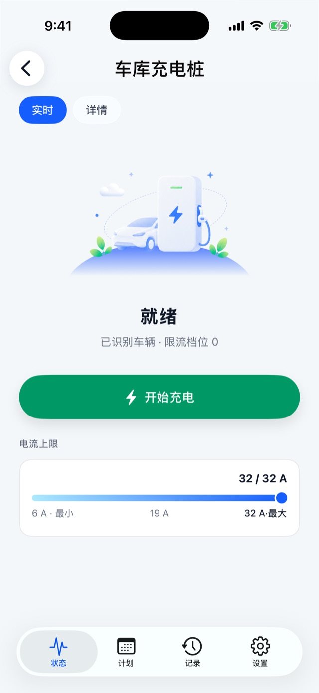
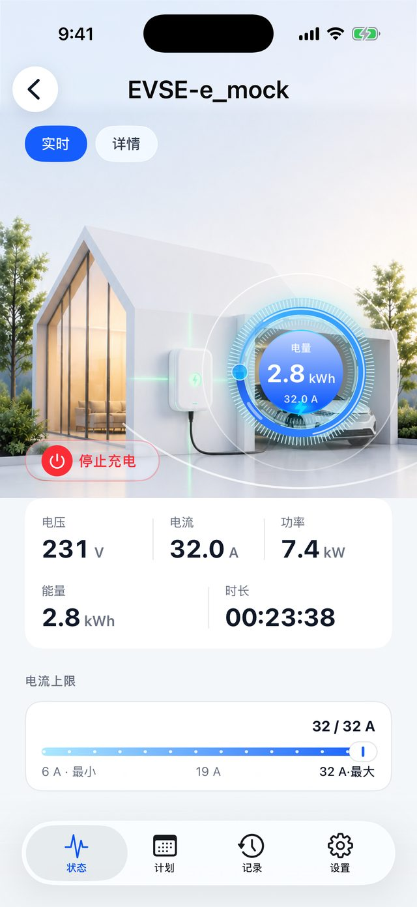
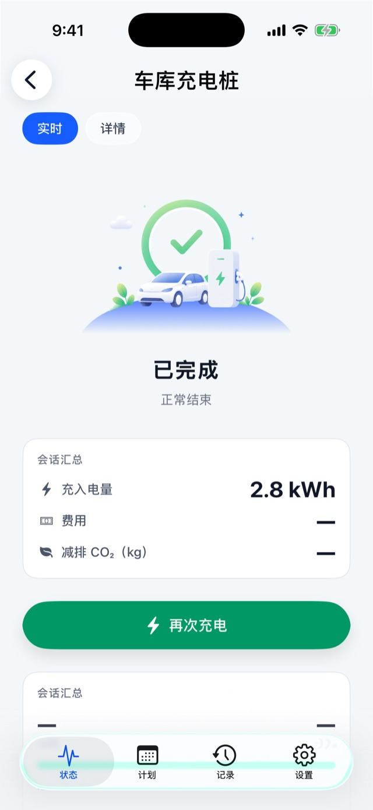
3.3 充电中界面
- 中间的功率表盘按「当前功率 / 1.84 kW」显示进度；
- 电压、电流、功率是实时值，能量、时长是本次累计；拿不到的数据显示「—」，不会显示成 0；
- 时长只算真正在充电的时间，暂停期间不计。
3.4 电流上限
BN21 额定 8 A，滑杆范围 6 – 8 A。拖动松手或直接点滑杆上的位置即下发；被充电器拒绝时滑杆自动弹回并提示原因。家里插座线路较老、怕发热时可以调低。
3.5 手机离开以后
- 正在进行的充电不受影响：充电器自己管充电，手机走开、App 关掉，都会一直充到车充满或你回来停止。
- 走开后 App 显示「设备离线」是正常的——BN21 只有蓝牙。回到充电器旁打开设备页即可重新连上。
- 想在不在旁时停止充电：只能拔枪，或回来用 App / 桩上按键停止。
预约充电
设备页 →「计划」标签。适合谷电时段充电。
| 模式 | 设置 | 行为 |
|---|---|---|
| 一次性 | 未来某个日期 + 时刻 | 到点自动开始一次 |
| 循环 | 每周选几天 + 一个统一时刻 | 每逢选中的日子到点开始 |
两种模式只能开一个，开一个会自动关另一个。
操作：先设时间 → 再打开「启用计划」/「循环计划」开关（这一刻才发给充电器）→ 提示「已设置预约充电」即成功。开关开着时时间不能改，要改先关掉。
BN21 预约三个要点：
- 先关掉「即插即充」（§5），否则一插枪就立即开始充，预约不起作用。
- 预约由充电器自己按时执行，设好后手机离开、App 关闭都没关系。
- BN21 断电后要用 App 连一次。 便携充电器拔下插头后内部时钟会丢失，下次插上电时请打开 App 连一下（进入设备页即可，App 会自动校准时间），预约才会按正确时间执行。没连之前，预约可能不准。
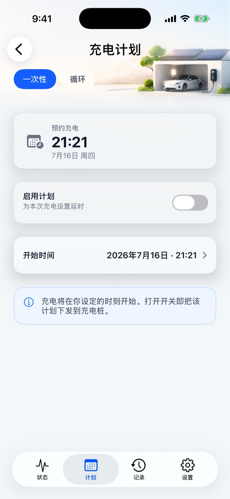
启动方式：即插即充与桩上按键
设备页 →「设置」→「充电鉴权」→「即插即充」开关（需在充电器旁）。
| 即插即充 | 怎么开始充电 |
|---|---|
| 开 | 插枪即开始，什么都不用点 |
| 关 | 用 App 点「开始充电」，或按充电器上的按键 |
- 桩上按键在两种模式下都能用，可以用来开始或停止充电——手机不在身边时也能在充电器上直接停。
- BN21 设置页里没有「如何开始充电」选项，这是正常的：它的启动方式就是上表这两种，不需要另外选。
- 想用预约（§4），记得把即插即充关掉。
设备设置
设备页 →「设置」标签。BN21 的设置页比联网型号短，没有「连接」「分享」「固件更新」这些行，属正常。
| 分组 | 设置项 | 说明 |
|---|---|---|
| 顶部设备卡 | 点击改名 | 改的只是 App 里的显示名 |
| 安全 | 最大电流 | 只读，8 A |
| 显示 | 屏幕亮度 + 自动调节 | 调充电器自带屏幕，拖动实时预览、松手生效 |
| 显示 | 降暗亮度 / 降暗延时 | 屏幕空闲多久后变暗、暗到多少 |
| 显示 | 温度单位 ℃ / ℉ | 充电器屏幕上的温度单位 |
| 充电鉴权 | 即插即充 | 见 §5 |
| 固件与信息 | 关于此充电桩 | 型号、序列号（双击可复制）、最大功率 / 电流、相数、固件版本、累计充电量 |
| 固件与信息 | 故障码说明 | 充电器屏幕上故障码的含义与处理建议 |
| 底部 | 解绑此设备 | 见 §8 |
屏幕、即插即充等设置都需要人在充电器旁、蓝牙已连。连不上时会提示「靠近后重试」。
充电记录与费用
7.1 充电记录
设备页 →「记录」标签：
- 最近充电的电量 / 续航 / 减碳统计，今天 / 本月汇总；
- 周 / 月 / 年充电量柱状图；
- 「查看全部」按月分组，可按日期筛选；
- 单条详情：电量、费用、开启方式（App 启动 / 按键启动 / 即插即充 / 预约启动）、停止方式；可「下载回执（PDF）」；
- 「导出完整历史（CSV）」可在电脑上用 Excel 打开。
BN21 的记录怎么来的：充电器自己记录每次充电，手机连上时同步到 App。所以：
- 充电时手机不在旁也没关系，下次打开设备页时会自动补上；
- 插枪不到 10 秒、一点电没充进去的「空插」不会生成记录；
- 偶尔个别字段（如开启方式）显示「—」，表示这次没拿到这项数据，不是出错。
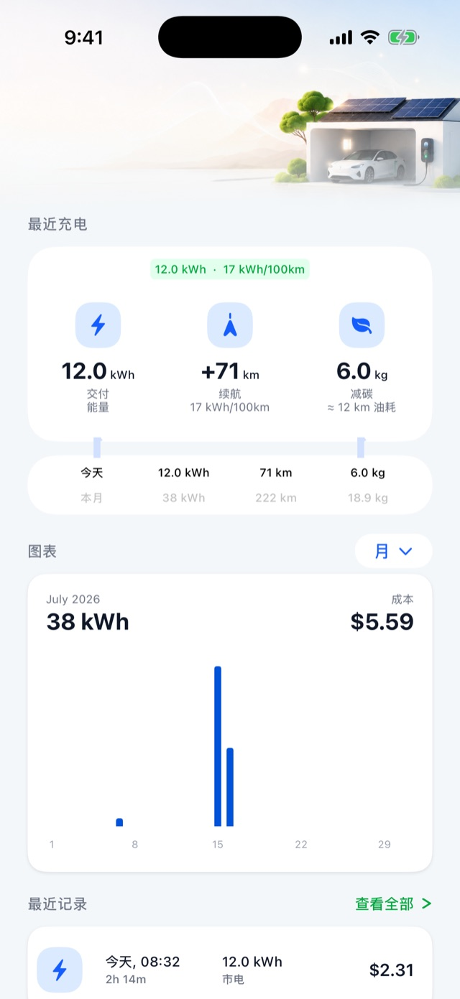
7.2 电价与车辆能耗
「我的 → 电价 / 车辆能耗」（全局设置，不用登录、不用联网，所有设备共用）：
- 电价方案：按工作日 / 周六 / 周日设置分时电价（峰 / 平 / 谷），时段可以跨夜。设好后记录和「已完成」页会显示每次充电的费用估算。澳洲、英国、西班牙、意大利、葡萄牙、法国用户可点「从电力公司导入」直接导入套餐（这一步需要手机联网）。
- 车辆能耗：设置百公里电耗（默认 17 kWh），用来把电量换算成续航里程。里程与减碳都是估算值。
解绑、转让与换手机
8.1 解绑（在充电器旁）
设备页 →「设置」→ 底部「解绑此设备」→ 按清单确认 →「解绑」。全程约 10 秒，请站在充电器旁、别关蓝牙。
解绑会：解除充电器上的绑定，并清除本机上这台 BN21 的充电记录、预约、显示设置等。解绑后任何人都能直接重新配对它。
8.2 不在充电器旁时
BN21 只能通过蓝牙解除绑定。人不在旁边时只能「从本机移除」：App 里的设备没了，但充电器上的绑定还在，之后谁要再配对它，都得先在充电器上恢复出厂（§8.3）。所以转让前，请尽量在充电器旁完成解绑。
8.3 在充电器上恢复出厂
- 拔下充电枪；
- 拔掉电源插头，再插上；
- 通电后 30 秒内，长按充电器按键约 10 秒；
- 再拔插一次电源（这一步不能省，否则新手机配不上）；
- 等屏幕稳定后重新配对。
8.4 iPhone 重新配对前：忽略旧蓝牙
解绑或恢复出厂后，如果要在同一台 iPhone 上重新配对：先到 iPhone「设置 → 蓝牙」，点 EVSE-XXXXXX 旁的 ⓘ →「忽略此设备」，再回 App 配对。系统里的旧配对不会随解绑自动清除，不忽略会反复连接失败。
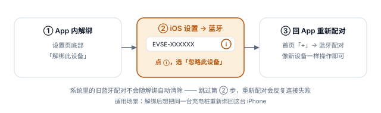
8.5 换手机
BN21 不联网，新手机无法直接接管旧手机的绑定。
旧手机上的充电记录不会迁移到新手机；需要保留的话，换机前先「导出完整历史（CSV）」。
消息与提醒
首页右上角铃铛进入消息中心。手机连着 BN21 时，充电开始 / 完成、告警（如过温、过流、接地故障、电压异常）会记录在这里，不用登录。
BN21 不联网，手机不在旁时收不到任何通知，回来连上后才会看到新状态。告警含义见帮助中心「告警说明」，充电器屏幕上的故障码见「设置 → 故障码说明」。
常见问题
| 问题 | 原因与处理 |
|---|---|
| App 显示「离线」 | BN21 只有蓝牙：走近充电器、确认手机蓝牙已开、充电器已通电。蓝牙权限被拒的话到系统设置里允许 |
| 不在家时能停止充电吗？ | 不能。BN21 不联网，只能回来用 App、桩上按键，或拔枪 |
| 预约没按时开始 | ①即插即充是否已关；②充电器断过电后是否用 App 连过一次（§4 要点 3）；③车辆自身是否设了预约或已充满 |
| 插枪就开始充，预约没用 | 即插即充开着，到「设置」关掉 |
| 设置页找不到 Wi-Fi / 分享 / 固件更新 | BN21 不支持这些功能，正常 |
| 充电器上按键没反应 | 先确认已插枪、充电器无故障；仍无效时到「设置」把即插即充开关拨一下（开或关都行，需在充电器旁），再试 |
| 恢复出厂后配不上 | 恢复出厂后要再断电重启一次（§8.3 第 4 步）；同一台 iPhone 还要先忽略旧蓝牙（§8.4） |
| 提示「未能确认命令是否生效」 | 不代表失败，只是确认超时，稍等界面会自动更新，别反复点 |
| 提示「充电桩已解绑」 | 充电器被恢复出厂或被别人解绑了，按弹窗「移除设备」后重新配对 |
| 记录里少了一次充电 | 打开设备页让手机连上，记录会自动补上；不到 10 秒的空插不记录 |
更多问题：「我的 → 帮助中心」；或登录后「我的 → 反馈」提交工单（建议打开「诊断信息」开关，便于定位）。
规格速查
| 项目 | BN21 |
|---|---|
| 型号码 | bn21-02-eu |
| 供电 | 单相 230 V |
| 额定电流 / 功率 | 8 A / 1.84 kW（App 可调 6 – 8 A） |
| 接口 | 欧标 Type 2 枪线 |
| 屏幕 | 有（只读显示屏） |
| 通信 | 蓝牙（无 Wi-Fi / 云端） |
| 启动方式 | App、桩上按键、即插即充 |
| NFC 刷卡 / 负载均衡 / 太阳能 / App 固件升级 | 不支持 |
本手册以 EVSE Pro 简体中文界面文案编写，功能以实际发布版本为准。示意截图取自其他型号，界面细节可能与 BN21 略有不同。